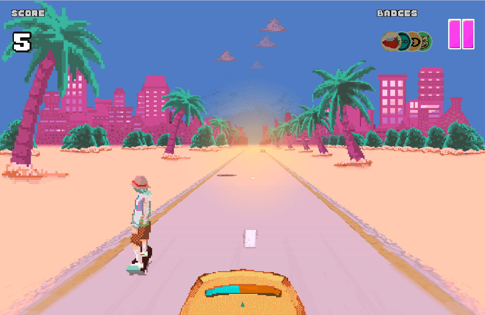
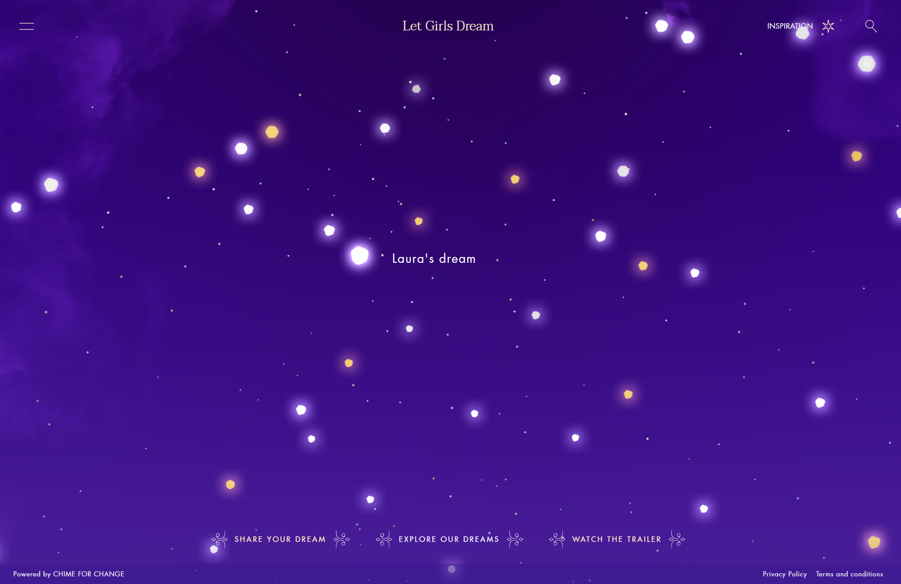

Gucci Grip was a game I found online. It uses swiping motions to jump and dodge obstacles. Because of the swiping motions, I think this would be better on a tablet or phone than on a computer. It just dumps you into the game right away, it has no explanation or a story behind it. I don't think it has a great message behind it or any infromation to share but it is a nice fun game. I really like that it is super colorful and entertaining to play. I think it can be improved with a story or some information it tells you in the end or in the begginning or something. It would be good if it had a share button so you can share your score online and get others to play, so you can spread the word of the site and have others see it.
Interaction Design Comparative Research


Let Girls Dream is a website to showcase people's dreams. It doesn't just showcase girl's dreams. Most are goals in life, what people want to accomplish or how they want the world to be. I think it is a great way to voice an idea or a goal and have others hear it. However I noticed a few people not taking it seriously and that damages the image a bit. I think a moderator for the submission would be useful to maintain an image. Each dream is a star that lights up when you mouse over it. And to find all the stars you have to explore the page. The interactivity is good and it is a good idea for displaying information.